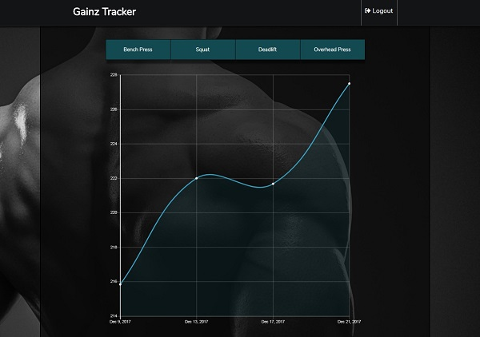

Website that uses MongoDB, Express.js, Angular 5, and Node.js (MEAN stack). It allows user to create an account, log in, generate a program, and save their progress for a specific day.
If enough data, for a certain exercise, is collected. The user can visualize its progression over time. Front-end was designed using Angular 4. The back-end uses nodejs and express. The database used is mongoDB.
The Back-End follow the REST architectural style, and the server is hosted using a virtual machine rented from Google Compute Engine.
WEBSITE GITHUB